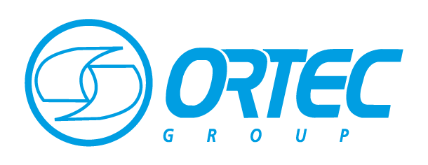
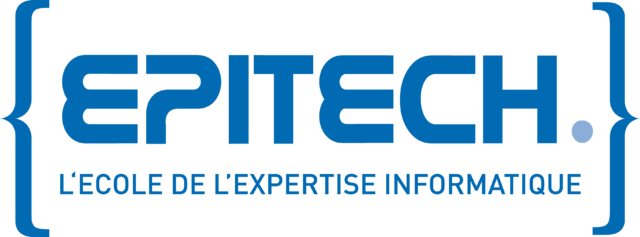
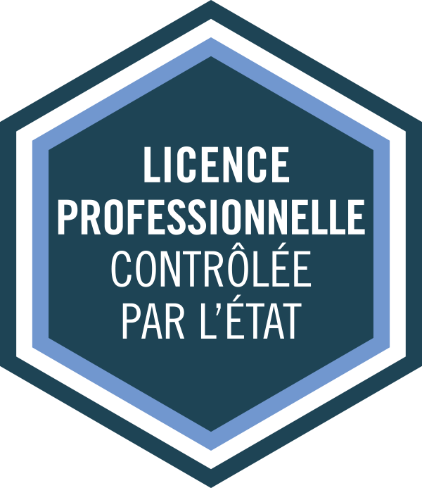
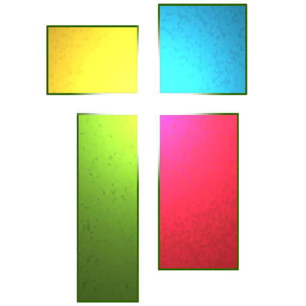

Maxime BERNARD
Développeur d'application WEB
Etudiant en informatique
Hello, world !
Qui suis-je ?
Passioné d'informatique depuis longtemps, j'ai commencé l'aventure en auto-didacte lorsque j'étais au lycée.
Spécialisé dans le développement WEB et tous ce qui l'entoure, je ne cesse ne me former aux nouvelles technologie afin de rester compétitif. Grand sportif, il s'agit d'une de mes principales qualitée
Qu'est-ce que je cherche ?
Je suis actuellement en alternance dans un grand group international spécilisé dans l'industrie.
L'an prochain je rejoindrais l'école EPITECH et sont parcours MSC PRO. Dans ce contexte, je suis à la recherhce d'une alternance sur Montpellier, dans un domaine tel que le développement WEB, l'IoT, ou la data Science
Mon parcours professionel
Vous retrouverez ci-desous la liste des mes experience professionel dans le domaine de l'informatique
-
Ortec GROUPAvril 2021 - Août 2022
Developpeur WEB / Adminitrateur SharePoint
Dans le cadre de mon stage de fin de DUT, j'ai eu l'occasion d'intégré la Cellule digitale du département environemment d'Ortec. Cette experience a ensuite été prolongée en alternance durant mon année de Licence PRO
Mission : Je suis en charge du dévellopement et de l'adminitration de plateformes extranets sous Microsoft SharePoint
Tâches : Développement Front-end, intégration d'API, développement et administration d'extranets sous SharePoint (~50)
Stack : JavaScript ES6+, HTML5, CSS3, Bootstrap 5, SharePoint, Kizeo, Excel + PowerPivot

Mon parcours scolaire
Vous retrouverez ci-desous mon cursus scolaire depuis le lycée
-
Epitech MCI PRO
BAC +5 / Alternance
Octobre 2022 - (Août 2024)
Description : Architecte logiciel, développeur d’applications, avec des spécilitées comme l'IoT, le Clould et la Bid Data
Stack : A venir ...
 -
LP DEV WEB / Big Data / e-Commerce
BAC + 3 / Alternance
Septemnre 2021 - Août 2022
Description : Developpement WEB Front et Back, Architecture et administratipn de base de données, Data Science (web scraping, data minning, etc ...), conception de logiciel, gestion de projet et travail en équipe.
Stack : Web frontend (JavaScript, HTML, CSS) / PHP (symphony) / Python (Django, Data Science) / Base de donnée (MySQL, MongoDB) / Java (POO)
 -
DUT Informatique
BAC + 2
Septembre 2019 - Juillet 2021
Description : Formation généraliste dans le domaine de l'informatique, projet concret et mise en pratique des aquis. Developpement WEB et Logiciel, Algorithmie, Réseau, Système, gestion de projet et méthodologie.
Stack : C/C++ (Algorithmie et POO) / Java (Conception logiciel) / Python (Algorithmie et Maths), Web (JS, HTML, CSS, PHP, SQL)

-
Lycée Saint-Charles
BAC S - Mention Europe
Septembre 2016 - Juillet 2019
Description : Bac scientifique Spé. Maths. Lycée numérique ou nous travaillons essencielement sur PC portable.

Compétence
-
Compétences techniques
- JavaScript
- Python
- HTML
- CSS
- SQL
- PHP
- Java
- Cpp
- C
- Electron.js
- React.js
- Django
- JQuery
- Bootstrap
-
Compétences divers
- API REST
- Git / GitHub
- Excel / Suite Office
- Référencement
- SharePoint
- Trello
- Base de donnée
- UML
-
Niveau professionel, la techno est maitrisée et utilisé courament (+250h - +1000h).
-
Niveau BAC + 3, la techno est maitriée et utilisée dans plusieurs projets (+100h)
-
Niveau notion, la techno à été vu en cours et utilisé dans au moins 1 projet (+25h)